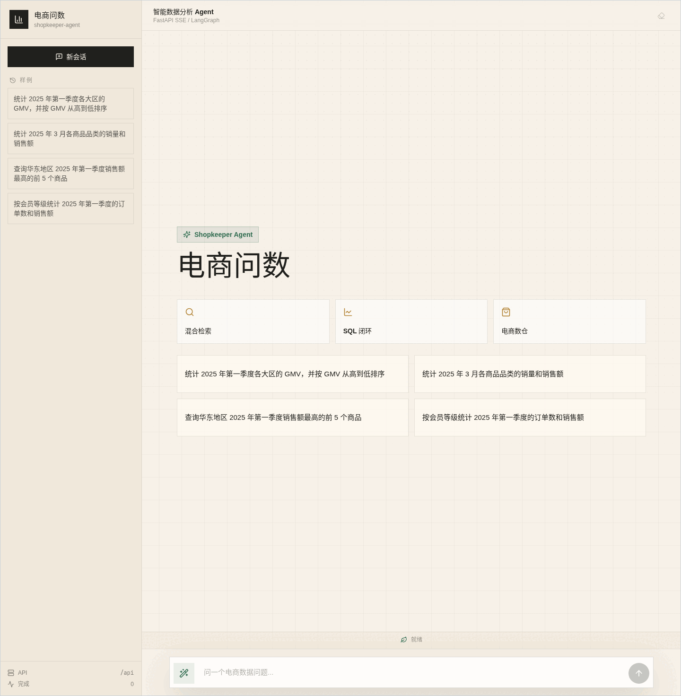

练本 · 阅读版（md 正典派生，改内容请改 manual/page-23.md）
第 23 页 · 装体验：从 17 行 HTML 到成熟版前端
前置：L5 只一页，接第 13–22 页那套整栈——Docker 可用、
.env已由make docker-env生成、make docker-up起过栈（第 22 页的拆一刀已还原：make docker-smoke回DOCKER SMOKE PASS；镜像已缓存在本地——第 1 步先判断镜像在不在，在就只up不重建）。本页不动后端、契约、数据，只换浏览器入口：同一个后端并排挂三种装修做对照。命令都在仓库根目录、同一终端里整段连续执行，括号是子 shell，跑完你还在仓库根目录。
这一页构建什么
同一套后端、同一份契约、同一条 SSE 流，前面出现过三种「装修」，从简到成熟（本页把第 3 种真跑起来、和第 2 种并排对照：装修只换承载页面的壳，不换承重墙）：
| # | 装修 | 说明 |
|---|---|---|
| 1 | 第 9 页那 17 行 HTML | <form> + <pre>，一行一个数——入口原型。 |
| 2 | frontend/ 教学版重建前端 |
compose 默认的 frontend 服务（默认端口 8080），「从零重建 · 教学版」界面、12 步 步骤轨，自带 40 条协议测试——它是脚手架，把系统结构摆在明面上。 |
| 3 | 成熟版原版 shopkeeper-agent |
交付时的样子（deliverable/v2/original-frontend/，React 19 + Tailwind 3.4.17 的构建产物 dist/）。 |
猜一猜
动手前写下答案（都允许猜错）：① 成熟版和教学版是不是两套接口？把成熟版挂到同一个后端上，后端要不要配一份新的？② 换成成熟版之后，契约（contracts/）要不要改？
动手
第 1 步：起整栈。 栈在跑就跳过（判据见第 13 页：五个长驻服务 healthy、init 退出 0）。
先判断镜像在不在：docker images | grep shopkeeper 有 backend、frontend 两行 → 栈停过只是没起，用 docker compose up -d（不重建，秒级）；第一次或代码真改过 → make docker-up（= up -d --build，约 8 分钟，第 13 页）：
docker images | grep shopkeeper # 判断：有 backend、frontend 两行 = 镜像已在本地
docker compose up -d # 镜像在：只起容器，不重建（秒级）
# 没有这两行 / 改过代码：改用 make docker-up（= up -d --build，约 8 分钟，第 13 页）
第 2 步：起成熟版，占 8088。 不碰 compose 默认的 8080 教学版，两个界面并排对照。成熟版容器要进 compose 网络，它 nginx.conf 里的 backend:8100 才解析得到。
网络名：compose.yaml 第 1 行 name: shopkeeper-rebuild + _default。若用 -p 或 COMPOSE_PROJECT_NAME 改过项目名，先 docker network ls | grep default 看实际那个再替换。
镜像：取你实际生效的 .env（make docker-env 一定生成 NGINX_IMAGE 那行）；只有 .env 缺这一行时才回退 .env.example（把命令里的 .env 换成 .env.example）。
陷阱：8088 被占或已有同名容器：先 docker rm -f lab-mature 再重跑：
docker run -d --name lab-mature --network shopkeeper-rebuild_default -p 127.0.0.1:8088:80 \
-v "$PWD/deliverable/v2/original-frontend/dist:/usr/share/nginx/html:ro" \
-v "$PWD/deliverable/v2/original-frontend/nginx.conf:/etc/nginx/conf.d/default.conf:ro" \
"$(grep '^NGINX_IMAGE=' .env | cut -d= -f2)"
第 3 步：跑教学版脚手架的测试。 这条判据测的是 frontend/ 教学版；成熟版是构建产物 dist/，不带这套测试，也别在 deliverable/v2/original-frontend/ 里跑。在仓库根目录跑（括号是子 shell，跑完还在根目录）：
(cd frontend && npm test)
第 4 步：对照着问。 浏览器开 http://127.0.0.1:8088（成熟版）和 http://127.0.0.1:8080（教学版，默认端口；改过 .env 的 FRONTEND_HOST_PORT 用你的端口），两边都问「华北销售额」。
你应该看到
成熟版（8088）是「电商问数 / shopkeeper-agent」的样子：左侧「样例」4 条、底部聊天输入框；问完出 12 节点流程图（11 个 ✓ + 校正SQL · 未触发）和「查询结果」表。
逐条对：成熟版结果表原样显示 41099.5（无千分位）；教学版（8080）同样的问法、同一个数，显示成 41,099.5（千分位写法，数值 = 第 7 页那个 41099.5）；第 3 步的测试汇总行 Tests 40 passed (40)（末行是 Duration）：
8088：标题「电商问数」+ 侧栏「样例」+ 底部聊天输入（不是「从零重建」）
8088：结果表 41099.5（无千分位）；12 节点 11 完成 + 1 未触发（校正SQL）
8080（默认端口；改过 .env 的 FRONTEND_HOST_PORT 用你的）：教学版「从零重建 · 教学版」，同一问题同一个数（显示 41,099.5）
npm test：Tests 40 passed (40)（末行是 Duration）

对账
- 猜 1：不是两套接口，后端一份都不用改。 成熟版前端只认
POST /api/query（deliverable/v2/original-frontend/src/lib/agentApi.ts）：同一条 SSE 流、同一套事件（happy 路径 23 条progress+ 1 条result）、同一份contracts/。 它的dist/里有一层薄适配：把契约的{columns, rows}渲染成自己的结果表、把 S7 的 step id 映成 12 个中文节点名——换算在浏览器里做，网络上一个字节没变。 - 猜 2：契约不改，但成熟版不请求
/api/steps。 教学版 12 条步骤轨来自/api/steps；成熟版把 12 节点拓扑写死在自己的组件里（src/components/StepRail.tsx），后端增删节点时成熟版要改这层映射。 教学版「看得见结构」（40 条协议测试 + 步骤轨），成熟版是「交付时的样子」。诚实边界：成熟版dist/是构建产物，本页不要求你从源码改它；它也不带npm test那 40 条测试。 - 卡住了看这里。
- 8088 打不开 /
Conflict：先看是不是同名容器残留——docker rm -f lab-mature后重跑第 2 步；若是别的进程占着 8088（ss -tlnp | grep 8088有输出），rm没用，把第 2 步-p里的 8088 换成空端口（如 8089）重跑，浏览器地址同步改。 - 8088 回
502：容器没进 compose 网络（用了默认 bridge），或项目名改过、shopkeeper-rebuild_default不存在——docker network ls | grep default查实际网络名。 - 8080 连不上：教学版栈没起，或端口改过——按第 13 页查
FRONTEND_HOST_PORT；别改compose.yaml。 - 结果不是
41099.5：数据库不是fixtures/dw.sql的演示集——make docker-reset（删数据卷、破坏性）→make docker-up重新 init（第 13 页），再问一句。
拆一刀
L5 的级考核：把 8088 的成熟版换成第 9 页的 17 行 HTML，看承重墙倒不倒。第 1 步：停成熟版。 容器删掉，整栈与 8080 教学版都不动：
docker rm -f lab-mature
第 2 步：写回第 9 页的页面，只补接线。 先 mkdir -p lab-mature（终端重定向不会自己建目录），再在仓库根目录建 lab-mature/index.html，内容如下。
改哪 3 处：form + pre + 事件处理骨架没变，只改 3 处接线（注释标出）：入口换成 POST /api/query、EventSource 换成 fetch 读流、结果行取 rows[0][0]；渲染那一行还是「收到 progress 显示 step，收到 result 显示数」。
为什么 29 行：接线 2 的读流样板让这页从 17 行长到 29 行——L5 不在 SPEC 的 L1 行数预算（≤25 行片段）内，29 行是为了可读。
<!doctype html>
<meta charset="utf-8">
<form onsubmit="ask(q.value); return false">
<input id="q" name="q" value="华北销售额" size="30"> <button>问一句</button>
</form>
<pre id="out"></pre>
<script>
function ask(question) {
out.textContent = '';
// 接线1：真后端入口是 POST /api/query（第 9 页是 GET /api/stream）
fetch('/api/query', {method: 'POST', headers: {'Content-Type': 'application/json'},
body: JSON.stringify({query: question})}).then(async (resp) => {
// 接线2：EventSource 换成 fetch 读流；帧还是 data: <json> 加空行
const reader = resp.body.getReader(), decoder = new TextDecoder();
let buf = '';
for (;;) {
const {value, done} = await reader.read(); if (done) break;
const frames = (buf += decoder.decode(value, {stream: true})).split('\n\n');
buf = frames.pop();
for (const frame of frames) {
const line = frame.split('\n').find((s) => s.startsWith('data: ')); if (!line) continue;
const msg = JSON.parse(line.slice(6));
// 接线3：真契约的结果行是二维数组，不是对象 rows[0].sales
out.textContent = msg.type === 'result' ? msg.data.rows[0][0] : msg.step;
}
}
});
}
</script>
第 3 步：用教学版镜像的 nginx 占 8088，挂这个页面。 反代配置（教学版镜像里的 docker/nginx.conf）沿用那一套，只把静态页换成刚写的 index.html；网络名同「动手」第 2 步（项目名改过先 docker network ls | grep default）：
docker run -d --name lab-mature --network shopkeeper-rebuild_default -p 127.0.0.1:8088:80 \
-v "$PWD/lab-mature/index.html:/usr/share/nginx/html/index.html:ro" \
shopkeeper-rebuild/frontend:local
第 4 步：再问一次。 浏览器开 http://127.0.0.1:8088（强刷），点「问一句」：<pre> 里先闪过 extract_keywords、generate_sql 这些步骤 id，约 6 秒后停在 41099.5。没有流程图、没有结果表——那两样就是成熟版 dist/ 在干的事。
第 5 步：还原。 删掉简陋入口（容器和 lab-mature/ 都删），8080 教学版不受影响；想再看成熟版，按「动手」第 2 步的命令重起 8088：
docker rm -f lab-mature && rm -rf lab-mature
结论：三次装修（17 行 41099.5 / 教学版 41,099.5 / 成熟版 41099.5）走同一条 POST /api/query、同一份契约，差的只是「谁负责渲染」。拆掉体验层，系统照跑。 L5 只一页：装修不改变承重墙，所以它不是新造一座城。